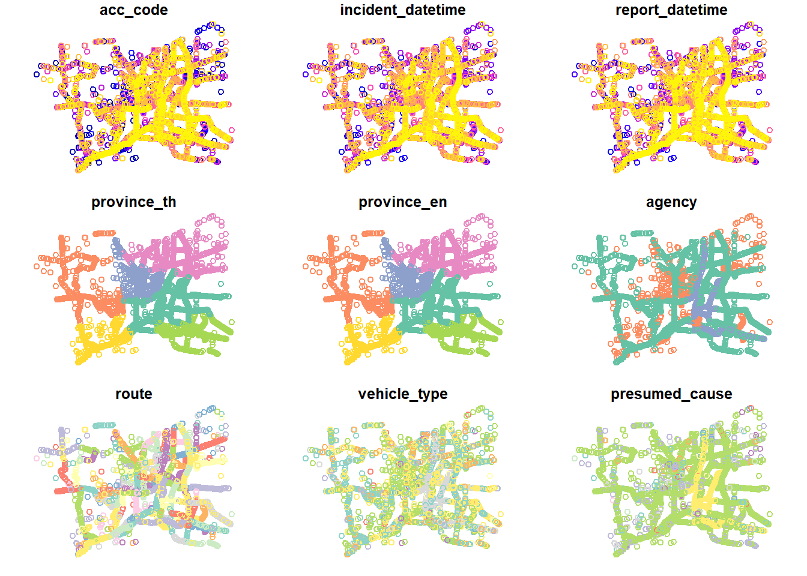
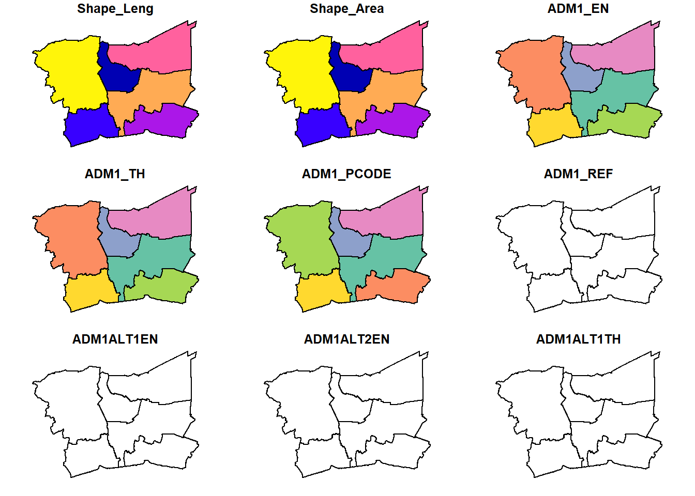
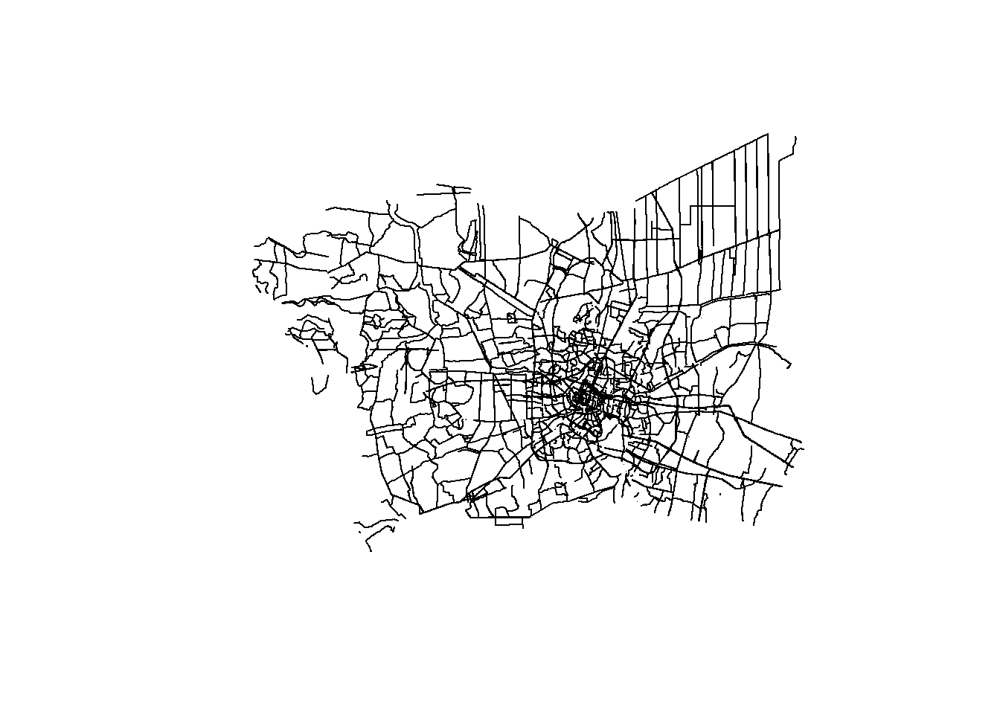
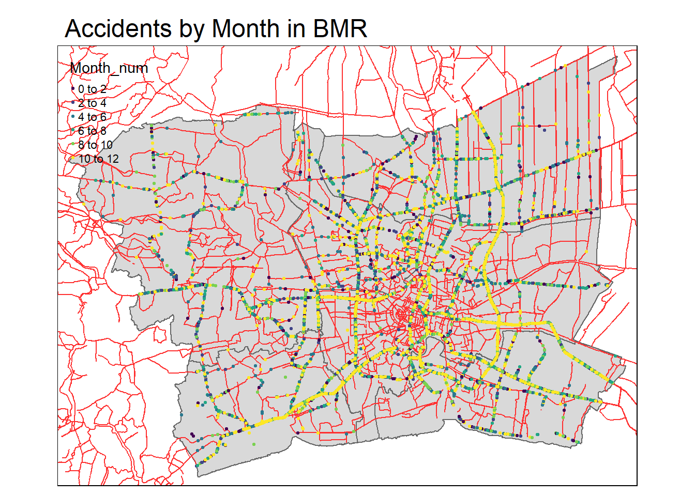
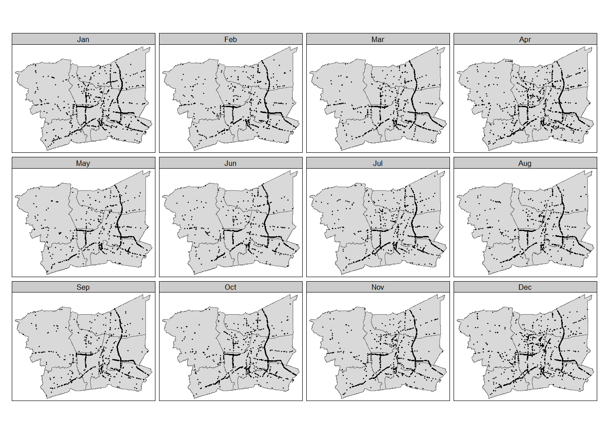

pacman::p_load(sf, sparr, spatstat, tmap, spNetwork, tidyverse)
set.seed(1234)Take Home Exercise 1 : Geospatial Analytics for Public Good
1. Background
Thailand’s roads are the deadliest in Southeast Asia and among the worst in the world, according to the World Health Organisation. About 20,000 people die in road accidents each year, or about 56 deaths a day (WHO).
Between 2014 and 2021, Thailand experienced a notable increase in accident frequencies. Specifically, 19% of all accidents in Thailand occurred on the national highways, which constituted the primary public thoroughfares connecting various regions, provinces, districts, and significant locations within a comprehensive network. Within the broader context of accidents across the country, there existed a considerable 66% likelihood of encountering accident-prone zones, often termed ‘black spots,’ distributed as follows: 66% on straight road segments, 13% at curves, 6% at median points of cross-shaped intersections, 5% at T-shaped intersections and Y-shaped intersections, 3% at cross-shaped intersections, 2% on bridges, and 2% on steep slopes, respectively.
2. Objectives of the Exercise
By and large, road traffic accidents can be attributed by two major factors, namely: behavioural and environmental factors. Behavioural factors in driving are considered to be major causes of traffic accidents either in direct or indirect manner (Lewin, 1982). These factors can be further grouped into two as, driver behavior (also called driver/driving style) and driver performance, in other words, driver/driving skills (Elander, West, & French, 1993). Environmental factors, on the other hand, includes but not limited to weather condition such as poor visibility during heavy rain or foggy and road conditions such as sharp bend road, slippery slope road, and blind spot.
Previous studies have demonstrated the significant potential of Spatial Point Patterns Analysis (SPPA) in exploring and identifying factors influencing road traffic accidents. However, these studies often focus solely on either behavioral or environmental factors, with limited consideration of temporal factors such as season, day of the week, or time of day.
In view of this, you are tasked to discover factors affecting road traffic accidents in the Bangkok Metropolitan Region BMR by employing both spatial spatio-temporal point patterns analysis methods.
The specific objectives of this take-home exercise are as follows:
To visualize the spatio-temporal dynamics of road traffic accidents in BMR using appropriate statistical graphics and geovisualization methods.
To conduct detailed spatial analysis of road traffic accidents using appropriate Network Spatial Point Patterns Analysis methods.
To conduct detailed spatio-temporal analysis of road traffic accidents using appropriate Temporal Network Spatial Point Patterns Analysis methods.
3. The Data
For the purpose of this exercise, three basic data sets must be used, they are:
4. Installing and Loading the R packages
In this hands-on exercise, five R packages will be used, they are:
sf, a relatively new R package specially designed to import, manage and process vector-based geospatial data in R.
spatstat, which has a wide range of useful functions for point pattern analysis. In this hands-on exercise, it will be used to perform 1st- and 2nd-order spatial point patterns analysis and derive kernel density estimation (KDE) layer.
maptools which provides a set of tools for manipulating geographic data. In this hands-on exercise, we mainly use it to convert Spatial objects into ppp format of spatstat.
tmap which provides functions for plotting cartographic quality static point patterns maps or interactive maps by using leaflet API.
spNetwork, which provides functions to perform Spatial Point Patterns Analysis such as kernel density estimation (KDE) and K-function on network. It also can be used to build spatial matrices (‘listw’ objects like in ‘spdep’ package) to conduct any kind of traditional spatial analysis with spatial weights based on reticular distances.
sparr provides functions to estimate fixed and adaptive kernel-smoothed spatial relative risk surfaces via the density-ratio method and perform subsequent inference. Fixed-bandwidth spatiotemporal density and relative risk estimation is also supported
Use the code chunk below to install and launch the five R packages.
5. Data Import and Preparation
5.1 Thailand Road Accident (2019 -2022)
rdacc <- read_csv("data/rawdata/thai_road_accident_2019_2022.csv") %>%
filter(!is.na(longitude) & longitude != "",
!is.na(latitude) & latitude != "") %>%
mutate(Month_num = month(incident_datetime)) %>%
mutate(Month_fac = month(incident_datetime,
label = TRUE,
abbr = TRUE)) %>%
mutate(dayofweek = day(incident_datetime)) %>%
st_as_sf(coords = c("longitude", "latitude"),crs=4326) %>%
st_transform(crs = 32647)head(rdacc)We will filer the province and zoom into the road traffic accidents in the Bangkok Metropolitan Region BMR (Bangkok, Nonthaburi, Nakhon Pathom,Pathum Thani, Samut Prakan, Samut Sakhon) .
# Filter for BMR region
rdacc_bmr <- rdacc %>%
filter(province_en %in% c("Bangkok", "Nonthaburi", "Nakhon Pathom",
"Pathum Thani", "Samut Prakan", "Samut Sakhon"))
head(rdacc_bmr)Simple feature collection with 6 features and 19 fields
Geometry type: POINT
Dimension: XY
Bounding box: xmin: 627012.3 ymin: 1502876 xmax: 693488.9 ymax: 1533381
Projected CRS: WGS 84 / UTM zone 47N
# A tibble: 6 × 20
acc_code incident_datetime report_datetime province_th province_en
<dbl> <dttm> <dttm> <chr> <chr>
1 571882 2019-01-01 02:25:00 2019-01-02 17:32:00 นครปฐม Nakhon Pathom
2 600001 2019-01-01 03:00:00 2019-01-05 10:33:00 นนทบุรี Nonthaburi
3 605043 2019-01-01 03:00:00 2019-03-29 08:22:00 สมุทรปราการ Samut Prakan
4 629691 2019-01-01 03:05:00 2019-01-01 03:05:00 กรุงเทพมหานคร Bangkok
5 571887 2019-01-01 04:30:00 2019-01-02 17:32:00 นครปฐม Nakhon Pathom
6 599234 2019-01-01 04:45:00 2019-01-02 08:28:00 สมุทรปราการ Samut Prakan
# ℹ 15 more variables: agency <chr>, route <chr>, vehicle_type <chr>,
# presumed_cause <chr>, accident_type <chr>,
# number_of_vehicles_involved <dbl>, number_of_fatalities <dbl>,
# number_of_injuries <dbl>, weather_condition <chr>, road_description <chr>,
# slope_description <chr>, Month_num <dbl>, Month_fac <ord>, dayofweek <int>,
# geometry <POINT [m]>plot(rdacc_bmr)
5.2 Thailand Roads (OpenStreetMap Export)
hotosm <- st_read(dsn = "data/rawdata",
layer = "hotosm_tha_roads_lines_shp")Reading layer `hotosm_tha_roads_lines_shp' from data source
`C:\Users\user\OneDrive - Singapore Management University\MITB\6. Geospatial Analytics and Applications\jeffleesl\ISSS626-GAA\Take-Home_Ex\Take-Home_Ex01\data\rawdata'
using driver `ESRI Shapefile'
Simple feature collection with 2792590 features and 14 fields
Geometry type: MULTILINESTRING
Dimension: XY
Bounding box: xmin: 97.34457 ymin: 5.643645 xmax: 105.6528 ymax: 20.47168
CRS: NA# Check if hotosm has assigned any CRS
st_crs(hotosm)Coordinate Reference System: NA# If CRS is missing, assign the correct CRS (assuming it's in WGS84, EPSG:4326)
if (is.na(st_crs(hotosm))) {
hotosm <- st_set_crs(hotosm, 4326) # Set CRS to WGS84 if missing
}
# Now transform to UTM Zone 47N (EPSG:32647)
hotosm <- st_transform(hotosm, crs = 32647)
# Check if transformation was successful
st_crs(hotosm)Coordinate Reference System:
User input: EPSG:32647
wkt:
PROJCRS["WGS 84 / UTM zone 47N",
BASEGEOGCRS["WGS 84",
ENSEMBLE["World Geodetic System 1984 ensemble",
MEMBER["World Geodetic System 1984 (Transit)"],
MEMBER["World Geodetic System 1984 (G730)"],
MEMBER["World Geodetic System 1984 (G873)"],
MEMBER["World Geodetic System 1984 (G1150)"],
MEMBER["World Geodetic System 1984 (G1674)"],
MEMBER["World Geodetic System 1984 (G1762)"],
MEMBER["World Geodetic System 1984 (G2139)"],
ELLIPSOID["WGS 84",6378137,298.257223563,
LENGTHUNIT["metre",1]],
ENSEMBLEACCURACY[2.0]],
PRIMEM["Greenwich",0,
ANGLEUNIT["degree",0.0174532925199433]],
ID["EPSG",4326]],
CONVERSION["UTM zone 47N",
METHOD["Transverse Mercator",
ID["EPSG",9807]],
PARAMETER["Latitude of natural origin",0,
ANGLEUNIT["degree",0.0174532925199433],
ID["EPSG",8801]],
PARAMETER["Longitude of natural origin",99,
ANGLEUNIT["degree",0.0174532925199433],
ID["EPSG",8802]],
PARAMETER["Scale factor at natural origin",0.9996,
SCALEUNIT["unity",1],
ID["EPSG",8805]],
PARAMETER["False easting",500000,
LENGTHUNIT["metre",1],
ID["EPSG",8806]],
PARAMETER["False northing",0,
LENGTHUNIT["metre",1],
ID["EPSG",8807]]],
CS[Cartesian,2],
AXIS["(E)",east,
ORDER[1],
LENGTHUNIT["metre",1]],
AXIS["(N)",north,
ORDER[2],
LENGTHUNIT["metre",1]],
USAGE[
SCOPE["Navigation and medium accuracy spatial referencing."],
AREA["Between 96°E and 102°E, northern hemisphere between equator and 84°N, onshore and offshore. China. Indonesia. Laos. Malaysia - West Malaysia. Mongolia. Myanmar (Burma). Russian Federation. Thailand."],
BBOX[0,96,84,102]],
ID["EPSG",32647]]unique(hotosm$highway) [1] "secondary" "residential" "secondary_link" "service"
[5] "tertiary" "path" "footway" "track"
[9] "unclassified" "trunk" "trunk_link" "primary"
[13] "primary_link" "steps" "motorway_link" "cycleway"
[17] "pedestrian" "tertiary_link" "motorway" "construction"
[21] "road" "raceway" "corridor" "living_street"
[25] "escape" "proposed" "busway" "bridleway"
[29] "abandoned" "parth" "barrier" "paved" hotosm_road_types <- hotosm %>%
filter(highway %in% c("motorway", "motorway_link", "primary", "primary_link",
"secondary", "secondary_link", "tertiary" , "tertiary_link"))
glimpse(hotosm_road_types)Rows: 93,863
Columns: 15
$ name <chr> "ถนนฉลองกรุง", NA, "ถนนฉลองกรุง", "ถนนเอราวัณ 1", NA, "ถนนลำลูก…
$ name_en <chr> "Chalong Krung Road", NA, "Chalong Krung Road", "Erawan 1 R…
$ highway <chr> "secondary", "secondary_link", "secondary", "tertiary", "te…
$ surface <chr> "paved", NA, "concrete", NA, NA, NA, "asphalt", "asphalt", …
$ smoothness <chr> NA, NA, NA, NA, NA, NA, NA, NA, NA, NA, NA, NA, NA, NA, NA,…
$ width <chr> NA, NA, NA, NA, NA, NA, NA, NA, NA, NA, NA, NA, NA, NA, NA,…
$ lanes <chr> NA, NA, "2", NA, NA, "3", NA, NA, "3", "3", "3", NA, NA, NA…
$ oneway <chr> "yes", "yes", "yes", NA, NA, "yes", "yes", "yes", "yes", "y…
$ bridge <chr> NA, NA, "yes", NA, NA, NA, NA, NA, NA, NA, NA, NA, NA, NA, …
$ layer <chr> NA, NA, "1", NA, NA, NA, NA, NA, NA, NA, NA, NA, NA, NA, NA…
$ source <chr> NA, NA, "Bing", NA, NA, NA, NA, NA, NA, NA, NA, "DOH RoadNe…
$ name_th <chr> "ถนนฉลองกรุง", NA, "ถนนฉลองกรุง", "ถนนเอราวัณ 1", NA, "ถนนลำลูก…
$ osm_id <dbl> 1125681229, 472283206, 116847248, 378672881, 347141451, 131…
$ osm_type <chr> "ways_line", "ways_line", "ways_line", "ways_line", "ways_l…
$ geometry <MULTILINESTRING [m]> MULTILINESTRING ((693686.1 ..., MULTILINEST…5.3 Thailand - Subnational Administrative Boundaries
# thaadm0 <- st_read(dsn = "data/rawdata",
#layer = "tha_admbnda_adm0_rtsd_20220121") %>%
# st_transform(crs = 32647)
## No BMR information
thaadm1 <- st_read(dsn = "data/rawdata",
layer = "tha_admbnda_adm1_rtsd_20220121") %>%
st_transform(crs = 32647)Reading layer `tha_admbnda_adm1_rtsd_20220121' from data source
`C:\Users\user\OneDrive - Singapore Management University\MITB\6. Geospatial Analytics and Applications\jeffleesl\ISSS626-GAA\Take-Home_Ex\Take-Home_Ex01\data\rawdata'
using driver `ESRI Shapefile'
Simple feature collection with 77 features and 16 fields
Geometry type: MULTIPOLYGON
Dimension: XY
Bounding box: xmin: 97.34336 ymin: 5.613038 xmax: 105.637 ymax: 20.46507
Geodetic CRS: WGS 84tsab_bmr <- thaadm1 %>%
filter(ADM1_EN %in% c("Bangkok", "Nonthaburi", "Nakhon Pathom",
"Pathum Thani", "Samut Prakan", "Samut Sakhon"))
# thaadm2 <- st_read(dsn = "data/rawdata",
#layer = "tha_admbnda_adm2_rtsd_20220121") %>%
# st_transform(crs = 32647) %>%
#filter(ADM2_EN %in% c("Bangkok", "Nonthaburi", "Nakhon Pathom",
#"Pathum Thani", "Samut Prakan", "Samut Sakhon"))
## No BMR information
# thaadm3 <- st_read(dsn = "data/rawdata",
# layer = "tha_admbnda_adm3_rtsd_20220121") %>%
# st_transform(crs = 32647) %>%
# filter(ADM3_EN %in% c("Bangkok", "Nonthaburi", "Nakhon Pathom",
# "Pathum Thani", "Samut Prakan", "Samut Sakhon"))
## No BMR information
# thaadmall <- st_read(dsn = "data/rawdata",
# layer = "tha_admbndl_admALL_rtsd_itos_20220121") %>%
# st_transform(crs = 32647)
## No BMR information
# thaadmlu <- st_read(dsn = "data/rawdata",
# layer = "tha_admbndt_adminUnitLookup")
## No BMR informationplot(tsab_bmr)
BMR <- st_transform(tsab_bmr, crs = st_crs(hotosm_road_types))
road_bmr <-st_intersection(hotosm_road_types, BMR)
plot(st_geometry(road_bmr))
road_owin <- as.owin(tsab_bmr)
road_owinwindow: polygonal boundary
enclosing rectangle: [587893.5, 712440.5] x [1484413.7, 1579076.3] unitsclass(road_owin)[1] "owin"6. Geospatial Analysis
6.1 Spatial Point Pattern Analysis
Analyze the distribution of road accidents in BMR. This includes calculating point densities, identifying accident hotspots (black spots), and testing for spatial clustering.
# Bounding box from the BMR region (create a spatial window)
bmr_window <- as.owin(st_bbox(rdacc_bmr))
# Extract coordinates of the road accidents for point pattern analysis
coords_accidents <- st_coordinates(rdacc_bmr)
# Create ppp object
ppp_accidents <- ppp(x = coords_accidents[,1],
y = coords_accidents[,2],
window = bmr_window)
# Plot the point pattern
plot(ppp_accidents, main = "Road Traffic Accidents in BMR")6.1.1 Using a Kernel Density Estimation (KDE) to identify high-risk areas.
The code chunk below is used to identify high-risk areas.
# Kernel density estimation
accident_density <- density(ppp_accidents, sigma = 1000) # Adjust sigma for smoothing
# Plot density map
plot(accident_density, main = "Accident Density in BMR")6.1.2 Adding provinces to the Kernel Density Estimation (KDE) to identify high-risk areas.
The previous plot did not allow us to identify the provinces clearly. In the code chunk below, we are able to determine that Bangkok is one of the areas with the highest accident risk, while Nakhon Pathom has one of the lowest accident rates.
# Kernel density estimation
accident_density <- density(ppp_accidents, sigma = 1000) # Adjust sigma for smoothing
# Plot density map
plot(accident_density, main = "Accident Density in BMR")
# Overlay province boundaries on the density plot
plot(st_geometry(tsab_bmr), add = TRUE, border = "lightsalmon", lwd = 2)
# Add province names at the centroid of each province polygon
centroids <- st_centroid(tsab_bmr) # Get centroids of provinces
# Loop over each province to add labels
text(st_coordinates(centroids), labels = tsab_bmr$ADM1_EN, cex = 0.8, col = "snow")6.1.3 Base Map with Accident Points
# Snap accident points to the nearest road
tm_shape(tsab_bmr) +
tm_polygons() + # Administrative boundaries of BMR
tm_shape(hotosm_road_types) +
tm_lines(col = "aquamarine4") + # Road network (in aquarmine4)
tm_layout(main.title = "Road Network in Bangkok Metropolitan Region",
legend.outside = TRUE)7. Visualize accidents with the road network and administrative boundaries
tm_shape(tsab_bmr) +
tm_polygons() +
tm_shape(hotosm_road_types) +
tm_lines(col = "grey") +
tm_shape(rdacc_bmr) +
tm_dots(size = 0.05, col = "tomato1") +
tm_layout(main.title = "Road Traffic Accidents in BMR")8.Visualize how accidents vary across month using time-based color coding or heatmaps.
# Map accidents by the month
#| eval: false
tm_shape(tsab_bmr) +
tm_polygons() +
tm_shape(hotosm_road_types) +
tm_lines(col = "firebrick1") +
tm_shape(rdacc_bmr) +
tm_dots(size = 0.05, col = "Month_num", palette = "viridis") +
tm_layout(main.title = "Accidents by Month in BMR")
9. Visualizing geographic distribution of car accident by month
# Map accidents by the month
#| eval: false
tm_shape(tsab_bmr) +
tm_polygons() +
tm_shape(rdacc_bmr) +
tm_dots(size = 0.05) +
tm_facets(by="Month_fac",
free.coords=FALSE,
drop.units = TRUE)
tm_layout(main.title = "Accidents by Month in BMR")$tm_layout
$tm_layout$main.title
[1] "Accidents by Month in BMR"
$tm_layout$style
[1] NA
attr(,"class")
[1] "tm"9.1 Computing STKDE by Month
9.1. Extracting road accident by Month
rdacc_month <- rdacc_bmr %>%
select(Month_num)9.2 Creating ppp
rdacc_month_ppp <- as.ppp(rdacc_month)
rdacc_month_pppMarked planar point pattern: 12986 points
marks are numeric, of storage type 'double'
window: rectangle = [591277.5, 710166.1] x [1486845.7, 1576520.5] units9.3 Check
The code chunk below is used to check the output is in the correct object class.
summary(rdacc_month_ppp)Marked planar point pattern: 12986 points
Average intensity 1.218049e-06 points per square unit
*Pattern contains duplicated points*
Coordinates are given to 10 decimal places
marks are numeric, of type 'double'
Summary:
Min. 1st Qu. Median Mean 3rd Qu. Max.
1.000 4.000 7.000 6.666 10.000 12.000
Window: rectangle = [591277.5, 710166.1] x [1486845.7, 1576520.5] units
(118900 x 89670 units)
Window area = 10661300000 square unitsNext, we will check if there are duplicated point events by using the code chunk below.
any(duplicated(rdacc_month_ppp))[1] TRUEWe have identified duplicates. To count the number of co-indicence point, we will use the multiplicity() function as shown in the code chunk below.
sum(multiplicity(rdacc_month_ppp)>1)[1] 6399.4 Solution
We will use jittering, which will add a small perturbation to the duplicate points so that they do not occupy the exact same space.
rdacc_month_ppp_jit <- rjitter(rdacc_month_ppp,
retry=TRUE,
nsim=1,
drop=TRUE)Check if any duplicated point in this geospatial data.
any(duplicated(rdacc_month_ppp_jit))[1] FALSEIncluding Owin object
The code chunk below is used to combine origin_am_ppp and am_owin objects into one.
rdacc_month_owin <- rdacc_month_ppp_jit[road_owin]
summary(rdacc_month_owin)Marked planar point pattern: 12979 points
Average intensity 1.6924e-06 points per square unit
Coordinates are given to 10 decimal places
marks are numeric, of type 'double'
Summary:
Min. 1st Qu. Median Mean 3rd Qu. Max.
1.000 4.000 7.000 6.667 10.000 12.000
Window: polygonal boundary
single connected closed polygon with 13779 vertices
enclosing rectangle: [587893.5, 712440.5] x [1484413.7, 1579076.3] units
(124500 x 94660 units)
Window area = 7668990000 square units
Fraction of frame area: 0.65As a good practice, plot() is used to plot ff_owin so that we can examine the correctness of the output object.
plot(rdacc_month_owin)
st_kde <- spattemp.density(rdacc_month_owin)
summary(st_kde)Spatiotemporal Kernel Density Estimate
Bandwidths
h = 4255.367 (spatial)
lambda = 0.0114 (temporal)
No. of observations
12979
Spatial bound
Type: polygonal
2D enclosure: [587893.5, 712440.5] x [1484414, 1579076]
Temporal bound
[1, 12]
Evaluation
128 x 128 x 12 trivariate lattice
Density range: [4.83487e-18, 6.233343e-09]10. Behavioral factors and Environmental factors
# Checking unique values in the presumed_cause column
unique(rdacc_bmr$presumed_cause)
# Filter behavioral factors
behavioral_factors <- rdacc_bmr %>%
filter(presumed_cause %in% c("abrupt lane change", "agressive driving/overtaking", "driving in the wrong lane", "driving under the influence of alcohol", "driving without headlights/illumination", "failure to signal enter/exit parking", "failure to yield right of way", "failure to yield/signal", "falling asleep", "ignoring stop sign while leaving intersection", "illegal overtaking", "inadequate visibility", "internal disturbance", "loss of control", "medical condition", "overloaded vehicle", "speeding", "sudden stop", "tailgating", "running red lights/traffic signals", "unfamilarity with the route/unskilled driving", "using mobile phone while driving", "using psychoactive substances"))
speeding_accidents <- rdacc_bmr %>%
filter(presumed_cause == "speeding")# Checking unique values in the weather_condition and slope_description column
unique(rdacc_bmr$weather_condition)[1] "clear" "other" "rainy" "dark"
[5] "land slide" "foggy" "natural disaster"# Filter environmental factors (weather conditions and slope)
environmental_factors <- rdacc_bmr %>%
filter(weather_condition %in% c("dark", "foggy", "landslide", "natural disaster", "rainy"))
rainy_accidents <- rdacc_bmr %>%
filter(weather_condition == "rainy")# Map accidents by BNehavioral factors (e.g., speeding)
tm_shape(tsab_bmr) +
tm_polygons() +
tm_shape(behavioral_factors) +
tm_dots(size = 0.01, col = "firebrick2") +
tm_layout(title = "Behavioral Factor")
# Map accidents by Environmental factors
tm_shape(tsab_bmr) +
tm_polygons() +
tm_shape(environmental_factors) +
tm_dots(size = 0.01, col = "royalblue4") +
tm_layout(title = "Environmental Factor")
# Map accidents by Speeding
tm_shape(tsab_bmr) +
tm_polygons() +
tm_shape(speeding_accidents) +
tm_dots(size = 0.01, col = "coral") +
tm_layout(title = "Behavioral Factor: Speeding Accidents")
# Map accidents by Rainy conditions
tm_shape(tsab_bmr) +
tm_polygons() +
tm_shape(rainy_accidents) +
tm_dots(size = 0.01, col = "chartreuse4") +
tm_layout(title = "Environmental Factor: Rainy Condition Accidents")# Combined map for environmental and behavioral factors
tm_shape(tsab_bmr) +
tm_polygons() +
tm_shape(environmental_factors) +
tm_dots(size = 0.01, col = "royalblue4", title = "Environmental Factors") +
tm_shape(behavioral_factors) +
tm_dots(size = 0.01, col = "firebrick2", title = "Behavioral Factors") +
tm_layout(title = "Environmental vs Behavioral Factors in Car Accidents") +
tm_shape(speeding_accidents) +
tm_dots(size = 0.01, col = "coral") +
tm_layout(title = "Behavioral Factor: Speeding Accidents") +
tm_shape(rainy_accidents) +
tm_dots(size = 0.01, col = "chartreuse4") +
tm_layout(title = "Environmental Factor: Rainy Condition Accidents")Contingency Table A contingency table will show how often both types of factors occur together.
# Create a combined dataset with both environmental and behavioral factors
combined_factors <- rdacc_bmr %>%
mutate(is_behavioral = presumed_cause %in% c("speeding", "abrupt lane change", "agressive driving/overtaking",
"driving in the wrong lane", "driving under the influence of alcohol",
"driving without headlights/illumination", "failure to signal enter/exit parking",
"failure to yield right of way", "failure to yield/signal",
"falling asleep", "ignoring stop sign while leaving intersection",
"illegal overtaking", "inadequate visibility", "internal disturbance",
"loss of control", "medical condition", "overloaded vehicle",
"speeding", "sudden stop", "tailgating", "running red lights/traffic signals",
"unfamilarity with the route/unskilled driving",
"using mobile phone while driving", "using psychoactive substances"),
is_environmental = weather_condition %in% c("dark", "foggy", "landslide", "natural disaster", "rainy") |
slope_description == "slope area" |
road_description == "sharp curve")
# Create a contingency table
table(combined_factors$is_behavioral, combined_factors$is_environmental)
FALSE TRUE
FALSE 1949 156
TRUE 9596 1285Output is saved in rds format for future used.
write_rds(rdacc_bmr,"data/rds/acc.rds")The code chunk below will be used to import the save origin6_9.rds into R environment.
acc <- read_rds("data/rds/acc.rds")